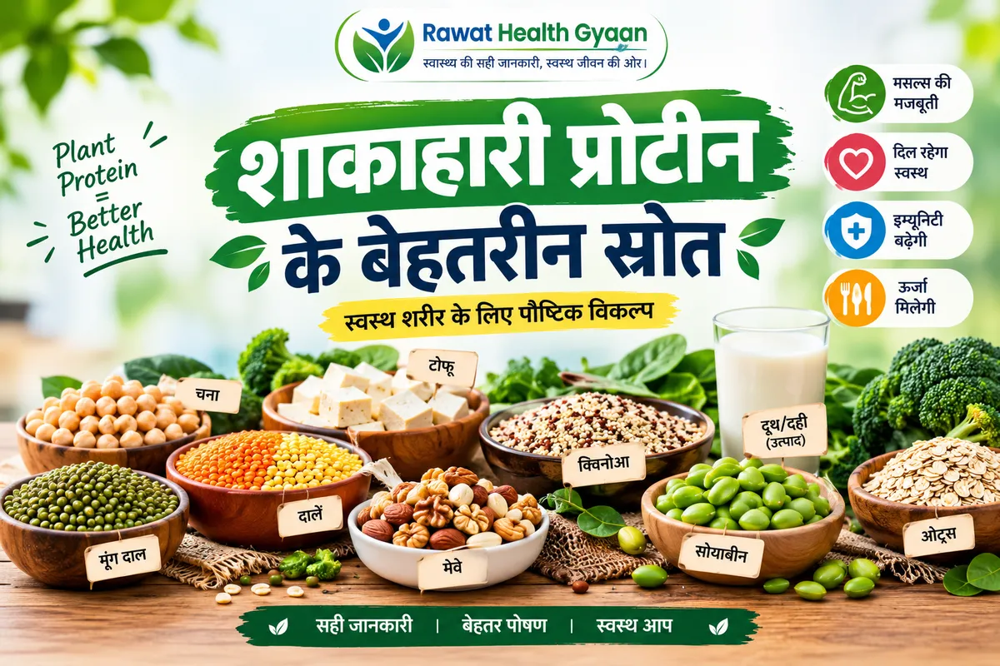

शाकाहारी प्रोटीन के स्रोत: दाल-रोटी से रोज़ का प्रोटीन कैसे पूरा करें?
Vegetarian Protein Sources: How to Meet Daily Protein with Everyday Indian Food
शाकाहारी प्रोटीन के स्रोत कौन-से हैं, रोज़ कितना चाहिए, और दाल, दही, पनीर व सोया से कटोरी के हिसाब से इसे कैसे पूरा करें, ICMR-NIN के आधार पर जानिए।
Vegetarian protein sources for Indian kitchens: how much you need daily, protein per katori of dal, curd and paneer, a sample day plan, and when to see a doctor.

मान लीजिए आप दोपहर में दाल-चावल खाकर दफ़्तर लौटे हैं और शाम को कोई कह देता है, “आप तो शाकाहारी हैं, प्रोटीन कहाँ से मिलता होगा? पाउडर शुरू कर दीजिए।” सुनकर मन में शक आ जाता है कि शायद हमारी थाली में ही कुछ कमी है। असल में ज़्यादातर मामलों में थाली की कमी कम होती है, मात्रा और बँटवारे की गड़बड़ी ज़्यादा।
सीधा जवाब: हाँ, शाकाहारी थाली से रोज़ का प्रोटीन पूरा हो सकता है। ICMR-NIN के 2024 के आहार दिशानिर्देशों में स्वस्थ वयस्क के लिए लगभग 0.83 ग्राम प्रोटीन प्रति किलो वज़न प्रतिदिन का आँकड़ा दिया गया है। यानी 60 किलो के व्यक्ति के लिए मोटे तौर पर 50 ग्राम। उन्हीं दिशानिर्देशों के हवाले से यह भी बताया गया है कि भारतीयों का औसत सेवन इससे कम, लगभग 0.66 ग्राम प्रति किलो है। मतलब दिक्कत अक्सर यहीं है कि प्रोटीन वाली चीज़ें थाली में कम पड़ जाती हैं।
इसके लिए महँगे पाउडर की नहीं, दाल, चना, राजमा, दूध-दही, पनीर, सोया, मूँगफली और अनाज को सही ढंग से मिलाने की ज़रूरत है। नीचे सब कुछ कटोरी, रोटी और मुट्ठी के हिसाब से समझाया है, ताकि कच्चे वज़न की किताबी संख्याओं में उलझना न पड़े।
रोज़ कितना प्रोटीन चाहिए? अपना अंदाज़ा ऐसे लगाइए
सबसे आसान तरीका है अपना वज़न किलो में लेकर 0.83 से गुणा करना। 60 किलो वाले के लिए यह लगभग 50 ग्राम बैठता है और 75 किलो वाले के लिए लगभग 62 ग्राम। यह एक औसत स्वस्थ वयस्क के लिए मोटा पैमाना है, कोई इलाज या डाइट-प्रिस्क्रिप्शन नहीं।
इंटरनेट पर अक्सर “रोज़ 90-100 ग्राम प्रोटीन” जैसे लक्ष्य घूमते रहते हैं। वे कुछ ख़ास हालात में, जैसे बहुत भारी ट्रेनिंग या किसी डॉक्टर की सलाह पर, समझ आ सकते हैं, पर आम स्वस्थ इंसान के लिए ज़रूरी नहीं हैं। ज़्यादा प्रोटीन खा लेने से मांसपेशियाँ अपने आप नहीं बढ़तीं; वह कसरत, नींद और कुल खाने पर भी निर्भर करता है।
शाकाहारी प्रोटीन के मुख्य स्रोत: कटोरी और मुट्ठी के हिसाब से
ज़्यादातर लिस्टें “प्रति 100 ग्राम कच्चा” के हिसाब से बनी होती हैं, और यहीं पाठक गड़बड़ा जाते हैं। कच्ची दाल पकने पर पानी सोखकर वज़न में दो-ढाई गुना या उससे भी ज़्यादा हो जाती है। इसलिए 100 ग्राम कच्ची दाल का प्रोटीन आपकी एक कटोरी में नहीं आता। नीचे दिए गए आँकड़े रोज़मर्रा की मात्रा के लिए मोटे अंदाज़े हैं, सटीक नाप नहीं।
दालें (मूँग, अरहर, मसूर, चना दाल): कच्ची दाल में लगभग 20 से 25 ग्राम प्रोटीन प्रति 100 ग्राम होता है। एक कटोरी पकी दाल में लगभग 5 से 8 ग्राम, जो इस पर निर्भर करता है कि दाल कितनी गाढ़ी बनी है।
राजमा, छोले, लोबिया: कच्चे में लगभग 20 ग्राम के आसपास प्रति 100 ग्राम। एक कटोरी पकी सब्ज़ी में लगभग 6 से 9 ग्राम।
पनीर: लगभग 18 से 19 ग्राम प्रति 100 ग्राम। 50 ग्राम के टुकड़े में करीब 9 ग्राम, पर साथ में फ़ैट और कैलोरी भी अच्छी-ख़ासी आती है।
दही और दूध: एक कटोरी दही में लगभग 4 से 6 ग्राम, एक गिलास (200 मिली) दूध में लगभग 6 से 7 ग्राम।
सोया चंक्स (न्यूट्रेला जैसे): सूखे रूप में लगभग 50 ग्राम प्रोटीन प्रति 100 ग्राम। 30 ग्राम सूखे चंक्स में करीब 15 ग्राम, पर इन्हें भिगोकर पकाने के बाद वज़न बढ़ जाता है।
भुना चना, मूँगफली, सत्तू: एक मुट्ठी (लगभग 30 ग्राम) में 6 से 8 ग्राम। सत्तू के दो बड़े चम्मच शरबत में लगभग 5 से 6 ग्राम।
रोटी, चावल और दलिया: एक रोटी में लगभग 3 ग्राम। देखने में कम लगता है, पर दिन भर में चार-छह रोटियों से यह अच्छी मात्रा बन जाती है।
बादाम, अखरोट, कद्दू और तिल के बीज: मुट्ठी भर में कुछ ग्राम प्रोटीन, साथ में अच्छे फ़ैट और खनिज, पर कैलोरी भी ज़्यादा। इन्हें मुख्य स्रोत नहीं, सहायक मानिए।
क्या दाल-चावल या दाल-रोटी मिलकर “पूरा” प्रोटीन बनाते हैं?
प्रोटीन अमीनो एसिड से बनता है। अनाज में लाइसिन नाम का अमीनो एसिड कम होता है, जबकि दालों में मेथियोनिन कम होता है। दोनों साथ खाने पर एक की कमी दूसरा पूरी कर देता है। इसीलिए हमारे घरों की दाल-रोटी, दाल-चावल, खिचड़ी और इडली-सांभर पीढ़ियों से चली आ रही समझदार जोड़ियाँ हैं।
ICMR-NIN के दिशानिर्देश अनाज और दाल को लगभग 3:1 के अनुपात में लेने की बात करते हैं, यानी थाली में अनाज का तीन हिस्सा और दाल का एक हिस्सा। साथ ही यह भी ध्यान रखिए कि दोनों का एक ही समय, एक ही कटोरी में होना ज़रूरी नहीं। पूरे दिन के खाने में दोनों आ जाएँ, तो मोटे तौर पर काम चल जाता है।
रोटी या चावल के साथ दाल, कढ़ी या राजमा
पोहे या उपमा में मूँगफली और ऊपर से एक कटोरी दही
बेसन या मूँग दाल का चीला, साथ में हरी चटनी
इडली-डोसा के साथ सांभर
दलिया या खिचड़ी में मूँग दाल और सब्ज़ियाँ
एक दिन की सैंपल थाली: लगभग 60 से 65 ग्राम प्रोटीन
यह सिर्फ़ उदाहरण है, कोई तय डाइट नहीं। अपनी भूख, पसंद और डॉक्टर या डायटीशियन की सलाह के हिसाब से बदलिए। गिनती मोटे अंदाज़ों पर आधारित है।
सुबह का नाश्ता: मूँग दाल के दो चीले और एक कटोरी दही। लगभग 14 ग्राम।
बीच में: एक मुट्ठी भुना चना। लगभग 6 ग्राम।
दोपहर का खाना: दो रोटी, एक कटोरी दाल, सब्ज़ी और एक कटोरी रायता। लगभग 18 ग्राम।
शाम की चाय के साथ: एक गिलास दूध या दूध वाली चाय और थोड़ी-सी मूँगफली। लगभग 12 से 14 ग्राम।
रात का खाना: दो रोटी और पनीर या भिगोए हुए सोया चंक्स की सब्ज़ी। लगभग 15 ग्राम।
इसमें कुछ भी अटपटा या महँगा नहीं है। अगर आप दूध-दही नहीं लेते, तो उनकी जगह दालें, सोया, टोफू, सत्तू और बीज थोड़ा बढ़ाने पड़ेंगे। इस हालत में बाहर से पोषण जाँच करवाना समझदारी होगी।
प्रोटीन पाउडर चाहिए या नहीं?
ICMR-NIN के 2024 के दिशानिर्देशों में साफ़ कहा गया है कि मांसपेशी बनाने के लिए प्रोटीन सप्लीमेंट पर निर्भर रहने की सलाह नहीं दी जाती। वजह यह बताई गई है कि लंबे समय तक बड़ी मात्रा में प्रोटीन पाउडर या सांद्र प्रोटीन लेने से हड्डियों के खनिज में कमी और किडनी पर असर जैसे जोखिम जुड़े देखे गए हैं। साथ ही, ज़्यादातर खिलाड़ी भी सही खाने से अपनी ज़रूरत पूरी कर सकते हैं।
इसका यह मतलब नहीं कि पाउडर हर किसी के लिए हमेशा गलत है। कई बार डॉक्टर या स्पोर्ट्स डायटीशियन किसी ख़ास वजह से इसे सुझाते हैं, जैसे लंबी बीमारी के बाद कमज़ोरी या खाना कम खा पाना। पर शुरुआत हमेशा थाली से कीजिए, और पाउडर लेना ही हो तो किसी योग्य विशेषज्ञ से पूछकर लीजिए, इंस्टाग्राम के विज्ञापन देखकर नहीं।
शाकाहारी प्रोटीन से जुड़े 6 आम भ्रम
भ्रम: शाकाहारियों में प्रोटीन की कमी होनी ही है। सच: सही योजना से शाकाहारी थाली भी ज़रूरत पूरी कर सकती है। असली दिक्कत मात्रा और विविधता की होती है।
भ्रम: दाल अधूरा प्रोटीन है, बेकार है। सच: दाल में कुछ अमीनो एसिड कम ज़रूर हैं, पर अनाज के साथ खाने पर तस्वीर काफ़ी संतुलित हो जाती है।
भ्रम: पनीर सबसे अच्छा प्रोटीन स्रोत है। सच: पनीर में प्रोटीन अच्छा है, पर दाल, चना और दही रोज़ की थाली में सस्ते और अक्सर ज़्यादा टिकाऊ विकल्प हैं।
भ्रम: ज़्यादा प्रोटीन हमेशा ज़्यादा सेहत। सच: ज़रूरत से बहुत ज़्यादा सेवन का कोई पक्का फ़ायदा नहीं, और कुछ लोगों में नुकसान हो सकता है।
भ्रम: सारा प्रोटीन एक ही बार में खा लेना चाहिए। सच: पूरे दिन में बाँटकर खाना ज़्यादा व्यावहारिक है और पेट पर भी हल्का पड़ता है।
भ्रम: सोया खाने से हमेशा नुकसान होता है। सच: पारंपरिक रूप में सोया सामान्य मात्रा में आम तौर पर सुरक्षित माना जाता है। थायरॉइड या हॉर्मोन की किसी समस्या में डॉक्टर से मात्रा पूछ लीजिए।
गैस, पेट फूलना और पचने की दिक्कत हो तो क्या करें?
राजमा, छोले और सोया खाने के बाद पेट फूलने की शिकायत बहुत आम है। इसकी एक वजह है कि इनमें ऐसे कार्बोहाइड्रेट होते हैं जो आँतों में किण्वित होकर गैस बना सकते हैं। कुछ आसान तरीके आम तौर पर मदद करते हैं:
दालें और फलियाँ रात भर या कम से कम कई घंटे भिगोइए और भीगा पानी फेंककर नए पानी में पकाइए।
अच्छी तरह पकाइए। प्रेशर कुकर में सीटी थोड़ी ज़्यादा लगने दीजिए ताकि दाल पूरी गल जाए।
हींग, जीरा और अजवाइन का तड़का हमारे यहाँ पारंपरिक रूप से इसी काम के लिए लगाया जाता है।
अचानक मात्रा मत बढ़ाइए। हफ़्ते भर में थोड़ा-थोड़ा करके बढ़ाइए, ताकि पेट को आदत पड़े।
फाइबर बढ़ाने के साथ पानी भी पर्याप्त पीजिए।
सोया चंक्स को गर्म पानी में भिगोकर निचोड़ लीजिए, फिर मसाले में पकाइए।
विटामिन B12, आयरन और जिंक का ध्यान कैसे रखें?
सिर्फ़ प्रोटीन पर ध्यान देने से बात नहीं बनती। शाकाहारी थाली में विटामिन B12 का स्रोत मुख्य रूप से दूध, दही और पनीर जैसे डेयरी उत्पाद होते हैं। जो लोग डेयरी भी कम लेते हैं, उनमें B12 की कमी का जोखिम बढ़ सकता है। इसकी जाँच और ज़रूरत पड़ने पर सप्लीमेंट का फ़ैसला डॉक्टर पर छोड़िए, अपनी मर्ज़ी से मात्रा तय मत कीजिए।
दालों और हरी पत्तेदार सब्ज़ियों से मिलने वाले आयरन का अवशोषण बढ़ाने के लिए खाने के साथ नींबू, आँवला या टमाटर जैसी खट्टी चीज़ें मददगार रहती हैं। कुछ लोगों में खाने के तुरंत बाद चाय पीने से आयरन का अवशोषण घट सकता है, इसलिए चाय को खाने से थोड़ा अलग रखना बेहतर है। बीज, मेवे, साबुत अनाज और दालें जिंक देते हैं।
किन लोगों को प्रोटीन बढ़ाने से पहले सावधानी रखनी चाहिए?
किडनी या लिवर की बीमारी वाले लोगों को अपनी मर्ज़ी से प्रोटीन बढ़ाना नहीं चाहिए। ऐसे में प्रोटीन की मात्रा डॉक्टर या डायटीशियन तय करते हैं, और कई बार उसे सीमित भी करना पड़ता है। यही बात उन पर लागू होती है जिन्हें डॉक्टर ने कोई ख़ास डाइट बताई है।
गर्भवती और स्तनपान कराने वाली महिलाएँ: ज़रूरत सामान्य से अलग होती है, इसलिए नियमित जाँच और डॉक्टर की सलाह ज़रूरी है।
बच्चे और किशोर: बढ़ती उम्र में पोषण ज़रूरी है। उन्हें सिर्फ़ पाउडर या शेक पर न रखें, संतुलित घर का खाना दें और बाल रोग विशेषज्ञ से सलाह लें।
बुज़ुर्ग: भूख और चबाने की क्षमता घटने से प्रोटीन कम पड़ सकता है। नरम और आसानी से पचने वाली चीज़ें, जैसे दाल, दही, खिचड़ी और पनीर, उपयोगी रहती हैं।
थायरॉइड, डायबिटीज़ या यूरिक एसिड के मरीज़: खाने की मात्रा और चुनाव के बारे में अपने डॉक्टर से पूछ लें।
अक्सर पूछे जाने वाले सवाल
क्या सिर्फ़ दाल-रोटी से रोज़ का प्रोटीन पूरा हो सकता है?
ज़्यादा लोगों के लिए यह एक अच्छी शुरुआत है, पर मात्रा मायने रखती है। एक कटोरी दाल और दो रोटी से पूरे दिन का लक्ष्य नहीं बनता। दिन भर में दूध-दही, चना, पनीर या सोया जैसी चीज़ें जोड़ने से बात बनती है।
पनीर और दाल में कौन-सा बेहतर है?
दोनों का अपना फ़ायदा है। पनीर में प्रोटीन अच्छा है, पर कैलोरी और फ़ैट भी ज़्यादा आते हैं। दाल सस्ती है, फाइबर देती है और रोज़ खाई जा सकती है। सबसे अच्छा है कि दोनों को बारी-बारी से थाली में रखें।
क्या सोया चंक्स रोज़ खा सकते हैं?
थोड़ी मात्रा में, संतुलित खाने के हिस्से के रूप में आम तौर पर ठीक माना जाता है। पर रोज़ बहुत ज़्यादा लेना ठीक नहीं। थायरॉइड की समस्या या कोई ख़ास बीमारी हो तो डॉक्टर से मात्रा पूछ लें।
क्या शाकाहारी लोग रोज़ 90 से 100 ग्राम प्रोटीन ले सकते हैं?
लिया जा सकता है, पर क्या वह ज़रूरी है, यह आपकी उम्र, वज़न, गतिविधि और सेहत पर निर्भर करता है। ICMR-NIN का औसत पैमाना इससे कम है। अगर आपको कोई ख़ास लक्ष्य दिया गया है, तो उसे अपने डायटीशियन से ही तय करवाइए।
जिम जाने वाले शाकाहारी क्या करें?
पहले थाली को ठीक कीजिए: दालें, दही, पनीर, चना, सोया और अनाज की अच्छी विविधता। भारी ट्रेनिंग करने वालों की ज़रूरत थोड़ी बढ़ सकती है, पर ICMR-NIN के अनुसार ज़्यादातर लोग खाने से ही उसे पूरा कर सकते हैं। सप्लीमेंट से पहले किसी स्पोर्ट्स डायटीशियन से बात कीजिए।
बच्चों को प्रोटीन कैसे दें?
बच्चों के लिए खिचड़ी, दाल-रोटी, दही, दूध, पनीर पराठा या बेसन का चीला जैसे घर के खाने काफ़ी रहते हैं। उन्हें अपनी मर्ज़ी से पाउडर या शेक न दें। अगर बच्चे का वज़न या कद ठीक से नहीं बढ़ रहा, तो बाल रोग विशेषज्ञ से मिलिए।
छोटा सार: शाकाहारी प्रोटीन का रास्ता महँगा या मुश्किल नहीं है। हर खाने में एक प्रोटीन वाली चीज़ रखिए, अनाज और दाल की जोड़ी बनाए रखिए, दिन भर में मात्रा बाँटिए और पाउडर को आख़िरी विकल्प मानिए। किडनी या लिवर की बीमारी, गर्भावस्था, बच्चों और बुज़ुर्गों के मामले में डॉक्टर या डायटीशियन की सलाह पहले लीजिए।
Picture this. You have just come back to the office after a lunch of dal and rice, and someone says, “You’re vegetarian, so where does your protein come from? Start a powder.” Suddenly you wonder if your plate is missing something. In most cases the plate is fine. What goes wrong is the quantity and the way protein is spread across the day.
The short answer: yes, a vegetarian Indian plate can meet daily protein needs. The ICMR-NIN Dietary Guidelines for Indians (2024) put the figure for healthy adults at about 0.83 g of protein per kg of body weight per day. For a 60 kg person that is roughly 50 g. Reports on the same guidelines also note that the average intake among Indians is lower, around 0.66 g per kg. So the real gap is usually that protein foods simply do not show up often enough on the plate.
You do not need an expensive powder to fix it. Dal, chana, rajma, milk, curd, paneer, soya, peanuts and grains, combined sensibly, are enough for most people. Everything below is explained in katoris, rotis and fistfuls, so you do not have to wrestle with raw-weight tables.
How much protein do you need each day?
The easiest method is to multiply your weight in kg by 0.83. A 60 kg adult lands near 50 g and a 75 kg adult near 62 g. This is a rough yardstick for an average healthy adult, not a prescription or a treatment plan.
Online you will often see targets like 90 to 100 g a day. Those can make sense in special situations, such as very heavy training or on a doctor’s advice, but they are not necessary for the average healthy person. Eating far more protein does not automatically build muscle. That also depends on exercise, sleep and your overall diet.
Vegetarian protein sources, in katoris and fistfuls
Most lists are written per 100 g of raw food, and that is where readers get confused. Raw dal soaks up water and becomes two to two and a half times heavier, or more, once cooked. So the protein in 100 g of raw dal is not what sits in your one katori. The figures below are rough everyday estimates, not exact measurements.
Dals (moong, arhar, masoor, chana dal): about 20 to 25 g of protein per 100 g raw. A katori of cooked dal gives roughly 5 to 8 g, depending on how thick it is.
Rajma, chhole, lobia: around 20 g per 100 g raw. A katori of the cooked dish gives roughly 6 to 9 g.
Paneer: about 18 to 19 g per 100 g. A 50 g piece has around 9 g, but it also brings a fair amount of fat and calories.
Curd and milk: a katori of curd has roughly 4 to 6 g, and a glass (200 ml) of milk about 6 to 7 g.
Soya chunks: about 50 g per 100 g dry. 30 g of dry chunks gives around 15 g, though they swell a lot once soaked and cooked.
Roasted chana, peanuts, sattu: a fistful (about 30 g) gives 6 to 8 g. Two tablespoons of sattu in a drink give roughly 5 to 6 g.
Roti, rice and dalia: about 3 g per roti. It looks small, but four to six rotis across a day add up to a useful amount.
Almonds, walnuts, pumpkin and sesame seeds: a few grams per handful along with healthy fats and minerals, but also plenty of calories. Treat them as helpers, not the main source.
Do dal-rice or dal-roti really make “complete” protein?
Protein is built from amino acids. Cereals are low in one called lysine, while pulses are low in methionine. Eat them together and each covers the other’s gap. That is why dal-roti, dal-chawal, khichdi and idli-sambar are such smart pairings that Indian kitchens have used for generations.
The ICMR-NIN guidelines talk about combining cereals and pulses at roughly a 3:1 ratio, three parts grain to one part pulse. You do not need both in the same bowl or even at the same meal. If both appear over the course of the day, you are broadly covered.
Roti or rice with dal, kadhi or rajma
Poha or upma with peanuts and a katori of curd
A besan or moong dal chilla with green chutney
Idli or dosa with sambar
Dalia or khichdi made with moong dal and vegetables
A sample day on the plate: about 60 to 65 g of protein
This is only an example, not a fixed diet. Adjust it to your appetite, preferences and your doctor’s or dietitian’s advice. The numbers are rough estimates.
Breakfast: two moong dal chillas and a katori of curd. About 14 g.
Mid-morning: a fistful of roasted chana. About 6 g.
Lunch: two rotis, a katori of dal, a vegetable and a katori of raita. About 18 g.
Evening: a glass of milk or milky tea with a small handful of peanuts. About 12 to 14 g.
Dinner: two rotis with paneer or soaked soya chunks sabzi. About 15 g.
Nothing here is odd or costly. If you avoid milk and curd, you will need to lean a little more on dals, soya, tofu, sattu and seeds, and it is wise to get a nutrition check-up in that case.
Do you need protein powder?
The 2024 ICMR-NIN guidelines clearly advise against relying on protein supplements to build muscle. The stated reason is that long-term, large intakes of protein powders or concentrates have been linked with risks such as loss of bone minerals and strain on the kidneys. The guidelines also say most athletes can meet their needs through food.
That does not mean a powder is wrong for everyone, always. Sometimes a doctor or sports dietitian suggests one for a specific reason, such as weakness after a long illness or difficulty eating enough. But start with the plate, and if you do consider a powder, ask a qualified professional rather than going by an Instagram advertisement.
Six common myths about vegetarian protein
Myth: vegetarians are bound to be short of protein. Truth: with planning, a vegetarian plate can meet the need. The real issue is quantity and variety.
Myth: dal is incomplete protein and therefore useless. Truth: dal is low in a few amino acids, but eaten with grains the picture becomes well balanced.
Myth: paneer is the best protein source. Truth: paneer is good, but dal, chana and curd are cheaper and often more sustainable everyday choices.
Myth: more protein always means better health. Truth: far more than you need has no proven benefit, and in some people it can do harm.
Myth: eat all your protein in one go. Truth: spreading it through the day is more practical and lighter on the stomach.
Myth: soya is always harmful. Truth: traditional soya foods in ordinary amounts are generally considered safe. If you have a thyroid or hormonal condition, ask your doctor about the quantity.
What if you get gas, bloating or trouble digesting?
Bloating after rajma, chhole or soya is very common. One reason is that these foods contain carbohydrates that ferment in the gut and produce gas. A few simple habits usually help:
Soak dals and beans overnight, or at least for several hours, discard the soaking water and cook in fresh water.
Cook them thoroughly. Give the pressure cooker an extra whistle so the dal turns completely soft.
Hing, jeera and ajwain tadka is used in Indian kitchens traditionally for exactly this reason.
Do not raise the quantity suddenly. Increase it gradually over a week so the gut can adjust.
Drink enough water as you add more fibre.
Soak soya chunks in hot water, squeeze them out, and then cook them in masala.
Looking after vitamin B12, iron and zinc
Protein is not the only thing on a vegetarian plate. The main vegetarian sources of vitamin B12 are dairy foods such as milk, curd and paneer. People who eat little dairy may be at higher risk of low B12. Testing, and any decision about supplements, should be left to your doctor. Please do not pick a dose yourself.
To absorb more of the iron in dals and leafy greens, a squeeze of lemon, amla or tomato with the meal helps. In some people, drinking tea right after a meal can reduce iron absorption, so it is better to keep tea a little apart from food. Seeds, nuts, whole grains and pulses provide zinc.
Who should be careful before raising protein?
People with kidney or liver disease should not increase protein on their own. For them the amount is set by a doctor or dietitian, and it sometimes has to be limited. The same applies to anyone who has been given a special diet by their doctor.
Pregnant and breastfeeding women: needs differ from the usual, so regular check-ups and a doctor’s advice matter.
Children and teenagers: growing bodies need good nutrition. Do not put them on powders or shakes alone. Offer balanced home food and consult a paediatrician.
Older adults: appetite and chewing ability can fall, so protein may run short. Soft, easy-to-digest foods such as dal, curd, khichdi and paneer are useful.
People with thyroid problems, diabetes or high uric acid: ask your doctor about the amounts and choices that suit you.
Frequently Asked Questions
Can dal-roti alone meet my daily protein?
It is a good start for most people, but quantity matters. One katori of dal and two rotis will not reach the whole day’s target. Adding milk, curd, chana, paneer or soya through the day fills the gap.
Which is better, paneer or dal?
Each has its own strength. Paneer has good protein but also more calories and fat. Dal is cheap, gives fibre and can be eaten daily. The best approach is to rotate both on your plate.
Can I eat soya chunks every day?
In small amounts as part of a balanced diet it is generally considered fine. Very large daily amounts are not a good idea. If you have a thyroid problem or another condition, ask your doctor how much suits you.
Can a vegetarian take 90 to 100 g of protein a day?
It can be done, but whether it is needed depends on your age, weight, activity and health. The ICMR-NIN average yardstick is lower. If you have been given a specific target, have a dietitian set it for you.
What should vegetarians who go to the gym do?
Fix the plate first: a good variety of dals, curd, paneer, chana, soya and grains. People in heavy training may need somewhat more, but according to ICMR-NIN most people can meet it through food. Talk to a sports dietitian before turning to supplements.
How can I give children enough protein?
Home food such as khichdi, dal-roti, curd, milk, paneer paratha or besan chilla usually works well. Do not give powders or shakes on your own. If a child’s weight or height is not progressing well, see a paediatrician.
The short version: Vegetarian protein is neither expensive nor difficult. Keep one protein food in every meal, keep the grain-and-dal pairing, spread the quantity through the day and treat powder as the last option. If kidney or liver disease, pregnancy, children or older adults are involved, take a doctor’s or dietitian’s advice first.
यह जानकारी सिर्फ शैक्षिक उद्देश्य से है, किसी भी इलाज से पहले डॉक्टर से सलाह लें।
This information is for educational purposes only. Please consult a doctor before any treatment.